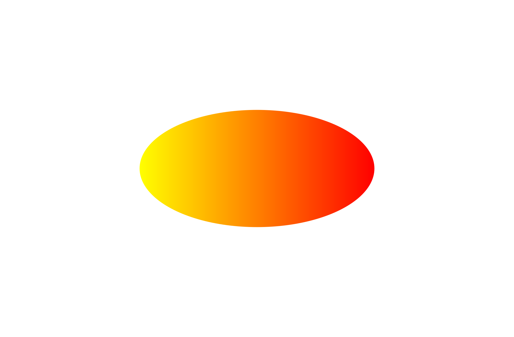

Rectangle
In this project, I have created three SVG files to showcase various shapes and animations. The first SVG file, "rectangle.svg," features a yellow rectangle with a blue border. I used the <rect> element and added a subtle animation to dynamically change its position.

Circle
The second SVG file, "circle.svg," presents a vibrant blue circle with a red border. I utilized the <circle> element and included an animation to modify its radius, creating an engaging visual effect.
Gradient
Lastly, the "gradient.svg" file displays an ellipse filled with a gradient transitioning from yellow to red. This file combines the <ellipse> element with a linear gradient defined in the <defs> section. Additionally, the ellipse undergoes a rotation animation to enhance its visual appeal.
